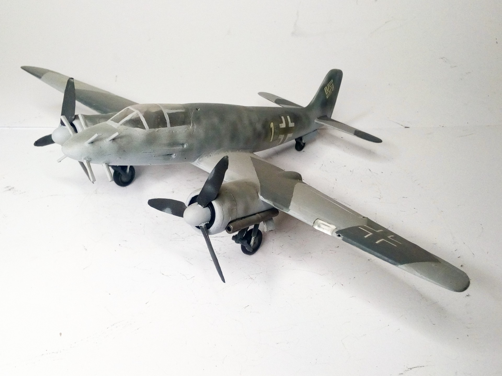
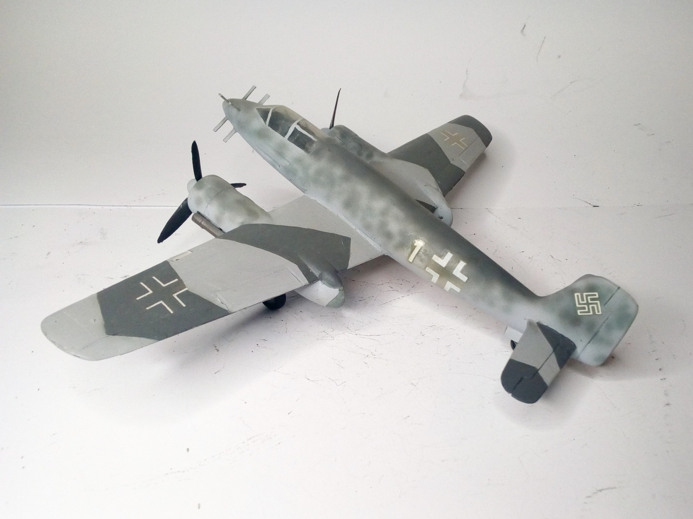

Aerei · scale model archive
Focke Wulf Ta154
Focke Wulf Ta154 — Kit: Conversion from PM Models, Scale: 1/72 #Ta154. I wanted to see how a low-wing Ta154 would look like, in order to improve pilot's…

Photo gallery

English description
I wanted to see how a low-wing Ta154 would look like, in order to improve pilot's visibility. It has to be a tail-sitter otherwise the front undercarriage length would be excessive. Anyway, with all due respect to Prof. Tank, the Mosquito remains unmatched.
#1/72 #conversion
Descrizione italiana
Volevo vedere che aspetto avrebbe avuto un Ta154 ad ala bassa, per migliorare la visibilità del pilota. Deve però essere un tail-sitter, altrimenti la lunghezza del carrello anteriore sarebbe eccessiva. In ogni caso, con tutto il rispetto per il professor Tank, il Mosquito resta insuperato. #1/72 #conversion